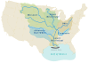

drainage-basin
phenomenon

Source: Wikipedia
Wikipedia Page (Something wrong with this association? Let us know.)
Wikidata Page (Something wrong with this association? Let us know.)
Occurs in:
- drainage-basin__area
- drainage-basin__d-infinity_contributing_area
- drainage-basin__d8_contributing_area
- drainage-basin__flint-law_coefficient
- drainage-basin__flint-law_exponent
- drainage-basin__mass-flux_contributing_area
- drainage-basin__max_of_elevation
- drainage-basin__mean_of_elevation
- drainage-basin__min_of_elevation
- drainage-basin__pfafstetter_code
- drainage-basin__range_of_elevation
- drainage-basin__usgs_hydrologic_unit_code
- drainage-basin_boundary__aspect_ratio
- drainage-basin_boundary__diameter
- drainage-basin_boundary__normalized_area-diameter_shape_factor
- drainage-basin_boundary__normalized_area-perimeter_shape_factor
- drainage-basin_boundary__normalized_diameter-perimeter_shape_factor
- drainage-basin_boundary__perimeter
- drainage-basin_centroid__elevation
- drainage-basin_centroid__latitude
- drainage-basin_centroid__longitude
- drainage-basin_channel-network_graph__diameter
- drainage-basin_channel-network__horton-strahler_order
- drainage-basin_channel-network__horton_bifurcation_ratio
- drainage-basin_channel-network__pfafstetter_code
- drainage-basin_channel-network__shreve_magnitude
- drainage-basin_channel-network__length-per-area_density
- drainage-basin_channel-network__length
- drainage-basin_channel-network__usgs_hydrologic_unit_code
- drainage-basin_channel-network_graph__diameter
- drainage-basin_channel-network_link~exterior__count
- drainage-basin_channel-network_link~exterior__mean_of_length
- drainage-basin_channel-network_link~interior__count
- drainage-basin_channel-network_link~interior__mean_of_length
- drainage-basin_channel-network_source__count
- drainage-basin_channel-network__length-per-area_density
- drainage-basin_channel~longest__hack-law_coefficient
- drainage-basin_channel~longest__hack-law_exponent
- drainage-basin_channel~longest__length
- drainage-basin_channel~longest_centerline__downvalley_sinuosity
- drainage-basin_channel~longest_centerline__sinuosity
- drainage-basin_land~burned__area_fraction
- drainage-basin_land~forested__area_fraction
- drainage-basin_grassland__area_fraction
- drainage-basin~bankfull_outlet__width
- drainage-basin_outlet__contributing_area
- drainage-basin_outlet_river-bank~left__latitude
- drainage-basin_outlet_river-bank~left__longitude
- drainage-basin_outlet_river-bank~right__latitude
- drainage-basin_outlet_river-bank~right__longitude
- drainage-basin_outlet_center__elevation
- drainage-basin_outlet_center__latitude
- drainage-basin_outlet_center__longitude
- drainage-basin_outlet_channel_bottom__slope
- drainage-basin_outlet_sediment__yield
- drainage-basin_outlet_water_flowing__half_of_fanning_friction_factor
- drainage-basin_outlet_water_sediment~bedload_flowing__mass_rate
- drainage-basin_outlet_water_sediment~bedload_flowing__volume_rate
- drainage-basin_outlet_water_sediment~suspended_flowing__mass_rate
- drainage-basin_outlet_water_sediment~suspended_flowing__volume_rate
- drainage-basin_outlet_water_sediment_flowing__mass_rate
- drainage-basin_outlet_water_sediment_flowing__volume_rate
- drainage-basin_outlet_water_sediment~washload_flowing__mass_rate
- drainage-basin_outlet_water_sediment~washload_flowing__volume_rate
- drainage-basin_outlet_water_x-section__mean_of_depth
- drainage-basin_outlet_water_x-section__peak_time_of_depth
- drainage-basin_outlet_water_flowing_x-section__peak_time_of_volume_rate
- drainage-basin_outlet_water_x-section__peak_time_of_volume_flux
- drainage-basin_outlet_water_flowing_x-section__time_integral_of_volume_rate
- drainage-basin_outlet_water_x-section__time_max_of_mean_of_depth
- drainage-basin_outlet_water_flowing_x-section__time_max_of_volume_rate
- drainage-basin_outlet_water_x-section__time_max_of_volume_flux
- drainage-basin_outlet_water_flowing_x-section__time_min_of_volume_rate
- drainage-basin_outlet_water_flowing_x-section__volume_rate
- drainage-basin_outlet_water_x-section__volume_flux
- drainage-basin_outlet_water_x-section__width-to-depth_ratio
- drainage-basin_outlet_water_x-section_top__width
- drainage-basin_outlet~terminal_water_flowing__mass_rate
- drainage-basin_outlet~terminal_water_flowing__volume_rate
- drainage-basin_rain-gauge__count
- drainage-basin_sources__count-per-area_density
- drainage-basin_weather-station__count
- drainage-basin_channel_entrance__contributing_area
- drainage-basin_channel_exit__contributing_area
- drainage-basin_water_flowing__geospatial_flood_depth_exceedance_index
- drainage-basin_boundary__hydrobasins_identification_code
- drainage-basin_river_channel_centerline_point__khandelwal_identification_code